- Explain the difference between a principle and a law.
- Explain the difference between a model and a theory.
The physical universe is enormously complex in its detail. Every day, each of us observes a great variety of objects and phenomena. Over the centuries, the curiosity of the human race has led us collectively to explore and catalog a tremendous wealth of information. From the flight of birds to the colors of flowers, from lightning to gravity, from quarks to clusters of galaxies, from the flow of time to the mystery of the creation of the universe, we have asked questions and assembled huge arrays of facts. In the face of all these details, we have discovered that a surprisingly small and unified set of physical laws can explain what we observe. As humans, we make generalizations and seek order. We have found that nature is remarkably cooperative—it exhibits theunderlying order and simplicitywe so value.
It is the underlying order of nature that makes science in general, and physics in particular, so enjoyable to study. For example, what do a bag of chips and a car battery have in common? Both contain energy that can be converted to other forms. The law of conservation of energy (which says that energy can change form but is never lost) ties together such topics as food calories, batteries, heat, light, and watch springs. Understanding this law makes it easier to learn about the various forms energy takes and how they relate to one another. Apparently unrelated topics are connected through broadly applicable physical laws, permitting an understanding beyond just the memorization of lists of facts.
The unifying aspect of physical laws and the basic simplicity of nature form the underlying themes of this text. In learning to apply these laws, you will, of course, study the most important topics in physics. More importantly, you will gain analytical abilities that will enable you to apply these laws far beyond the scope of what can be included in a single book. These analytical skills will help you to excel academically, and they will also help you to think critically in any professional career you choose to pursue. This module discusses the realm of physics (to define what physics is), some applications of physics (to illustrate its relevance to other disciplines), and more precisely what constitutes a physical law (to illuminate the importance of experimentation to theory).
Science consists of the theories and laws that are the general truths of nature as well as the body of knowledge they encompass. Scientists are continually trying to expand this body of knowledge and to perfect the expression of the laws that describe it.Physicsis concerned with describing the interactions of energy, matter, space, and time, and it is especially interested in what fundamental mechanisms underlie every phenomenon. The concern for describing the basic phenomena in nature essentially defines therealm of physics.
Physics aims to describe the function of everything around us, from the movement of tiny charged particles to the motion of people, cars, and spaceships. In fact, almost everything around you can be described quite accurately by the laws of physics. Consider a smart phone (Figure . Physics describes how electricity interacts with the various circuits inside the device. This knowledge helps engineers select the appropriate materials and circuit layout when building the smart phone. Next, consider a GPS system. Physics describes the relationship between the speed of an object, the distance over which it travels, and the time it takes to travel that distance. When you use a GPS device in a vehicle, it utilizes these physics equations to determine the travel time from one location to another.
#### Applications of Physics
You need not be a scientist to use physics. On the contrary, knowledge of physics is useful in everyday situations as well as in nonscientific professions. It can help you understand how microwave ovens work, why metals should not be put into them, and why they might affect pacemakers (Figures and . Physics allows you to understand the hazards of radiation and rationally evaluate these hazards more easily. Physics also explains the reason why a black car radiator helps remove heat in a car engine, and it explains why a white roof helps keep the inside of a house cool. Similarly, the operation of a car’s ignition system as well as the transmission of electrical signals through our body’s nervous system are much easier to understand when you think about them in terms of basic physics.
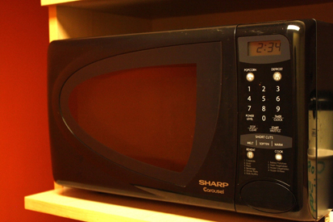
Physics is the foundation of many important disciplines and contributes directly to others. Chemistry, for example—since it deals with the interactions of atoms and molecules—is rooted in atomic and molecular physics. Most branches of engineering are applied physics. In architecture, physics is at the heart of structural stability, and is involved in the acoustics, heating, lighting, and cooling of buildings. Parts of geology rely heavily on physics, such as radioactive dating of rocks, earthquake analysis, and heat transfer in the Earth. Some disciplines, such as biophysics and geophysics, are hybrids of physics and other disciplines.
Physics has many applications in the biological sciences. On the microscopic level, it helps describe the properties of cell walls and cell membranes (Figures and . On the macroscopic level, it can explain the heat, work, and power associated with the human body. Physics is involved in medical diagnostics, such as x-rays, magnetic resonance imaging (MRI), and ultrasonic blood flow measurements. Medical therapy sometimes directly involves physics; for example, cancer radiotherapy uses ionizing radiation. Physics can also explain sensory phenomena, such as how musical instruments make sound, how the eye detects color, and how lasers can transmit information.
It is not necessary to formally study all applications of physics. What is most useful is knowledge of the basic laws of physics and a skill in the analytical methods for applying them. The study of physics also can improve your problem-solving skills. Furthermore, physics has retained the most basic aspects of science, so it is used by all of the sciences, and the study of physics makes other sciences easier to understand.
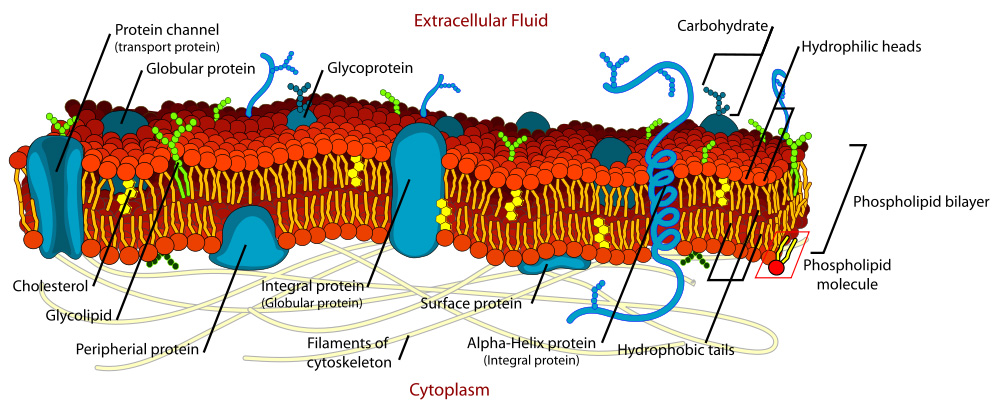
The laws of nature are concise descriptions of the universe around us; they are human statements of the underlying laws or rules that all natural processes follow. Such laws are intrinsic to the universe; humans did not create them and so cannot change them. We can only discover and understand them. Their discovery is a very human endeavor, with all the elements of mystery, imagination, struggle, triumph, and disappointment inherent in any creative effort (Figures and . The cornerstone of discovering natural laws is observation; science must describe the universe as it is, not as we may imagine it to be.
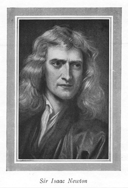
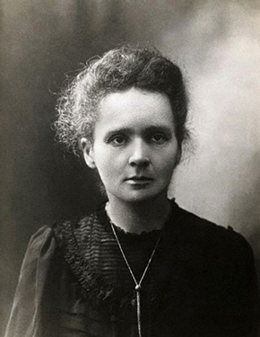
We all are curious to some extent. We look around, make generalizations, and try to understand what we see—for example, we look up and wonder whether one type of cloud signals an oncoming storm. As we become serious about exploring nature, we become more organized and formal in collecting and analyzing data. We attempt greater precision, perform controlled experiments (if we can), and write down ideas about how the data may be organized and unified. We then formulate models, theories, and laws based on the data we have collected and analyzed to generalize and communicate the results of these experiments.
Amodelis a representation of something that is often too difficult (or impossible) to display directly. While a model is justified with experimental proof, it is only accurate under limited situations. An example is the planetary model of the atom in which electrons are pictured as orbiting the nucleus, analogous to the way planets orbit the Sun. (See Figure 9.) We cannot observe electron orbits directly, but the mental image helps explain the observations we can make, such as the emission of light from hot gases (atomic spectra). Physicists use models for a variety of purposes. For example, models can help physicists analyze a scenario and perform a calculation, or they can be used to represent a situation in the form of a computer simulation. Atheoryis an explanation for patterns in nature that is supported by scientific evidence and verified multiple times by various groups of researchers. Some theories include models to help visualize phenomena, whereas others do not. Newton’s theory of gravity, for example, does not require a model or mental image, because we can observe the objects directly with our own senses. The kinetic theory of gases, on the other hand, is a model in which a gas is viewed as being composed of atoms and molecules. Atoms and molecules are too small to be observed directly with our senses—thus, we picture them mentally to understand what our instruments tell us about the behavior of gases.
Alawuses concise language to describe a generalized pattern in nature that is supported by scientific evidence and repeated experiments. Often, a law can be expressed in the form of a single mathematical equation. Laws and theories are similar in that they are both scientific statements that result from a tested hypothesis and are supported by scientific evidence. However, the designationlawis reserved for a concise and very general statement that describes phenomena in nature, such as the law that energy is conserved during any process, or Newton’s second law of motion, which relates force, mass, and acceleration by the simple equation
A theory, in contrast, is a less concise statement of observed phenomena. For example, the Theory of Evolution and the Theory of Relativity cannot be expressed concisely enough to be considered a law. The biggest difference between a law and a theory is that a theory is much more complex and dynamic. A law describes a single action, whereas a theory explains an entire group of related phenomena. And, whereas a law is a postulate that forms the foundation of the scientific method, a theory is the end result of that process.
Less broadly applicable statements are usually called principles (such as Pascal’s principle, which is applicable only in fluids), but the distinction between laws and principles often is not carefully made.
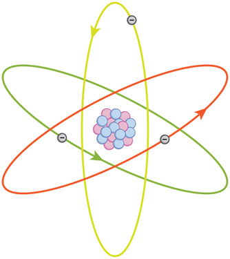
MODELS, THEORIES, AND LAWS
Models, theories, and laws are used to help scientists analyze the data they have already collected. However, often after a model, theory, or law has been developed, it points scientists toward new discoveries they would not otherwise have made.
The models, theories, and laws we devise sometimesimply the existence of objects or phenomena as yet unobserved.These predictions are remarkable triumphs and tributes to the power of science. It is the underlying order in the universe that enables scientists to make such spectacular predictions. However, ifexperimentdoes not verify our predictions, then the theory or law is wrong, no matter how elegant or convenient it is. Laws can never be known with absolute certainty because it is impossible to perform every imaginable experiment in order to confirm a law in every possible scenario. Physicists operate under the assumption that all scientific laws and theories are valid until a counterexample is observed. If a good-quality, verifiable experiment contradicts a well-established law, then the law must be modified or overthrown completely.
The study of science in general and physics in particular is an adventure much like the exploration of uncharted ocean. Discoveries are made; models, theories, and laws are formulated; and the beauty of the physical universe is made more sublime for the insights gained.
THE SCIENTIFIC METHOD
As scientists inquire and gather information about the world, they follow a process called the scientific method. This process typically begins with an observation and question that the scientist will research. Next, the scientist typically performs some research about the topic and then devises a hypothesis. Then, the scientist will test the hypothesis by performing an experiment. Finally, the scientist analyzes the results of the experiment and draws a conclusion. Note that the scientific method can be applied to many situations that are not limited to science, and this method can be modified to suit the situation.
Consider an example. Let us say that you try to turn on your car, but it will not start. You undoubtedly wonder: Why will the car not start? You can follow a scientific method to answer this question. First off, you may perform some research to determine a variety of reasons why the car will not start. Next, you will state a hypothesis. For example, you may believe that the car is not starting because it has no engine oil. To test this, you open the hood of the car and examine the oil level. You observe that the oil is at an acceptable level, and you thus conclude that the oil level is not contributing to your car issue. To troubleshoot the issue further, you may devise a new hypothesis to test and then repeat the process again.
Physics was not always a separate and distinct discipline. It remains connected to other sciences to this day. The wordphysicscomes from Greek, meaning nature. The study of nature came to be called “natural philosophy.” From ancient times through the Renaissance, natural philosophy encompassed many fields, including astronomy, biology, chemistry, physics, mathematics, and medicine. Over the last few centuries, the growth of knowledge has resulted in ever-increasing specialization and branching of natural philosophy into separate fields, with physics retaining the most basic facets (Figures -Figure . Physics as it developed from the Renaissance to the end of the 19th century is calledclassical physics. It was transformed into modern physics by revolutionary discoveries made starting at the beginning of the 20th century.
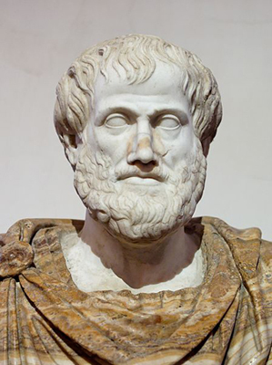
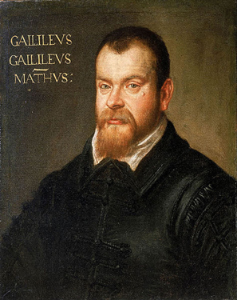
Classical physics is not an exact description of the universe, but it is an excellent approximation under the following conditions: Matter must be moving at speeds less than about 1% of the speed of light, the objects dealt with must be large enough to be seen with a microscope, and only weak gravitational fields, such as the field generated by the Earth, can be involved. Because humans live under such circumstances, classical physics seems intuitively reasonable, while many aspects of modern physics seem bizarre. This is why models are so useful in modern physics—they let us conceptualize phenomena we do not ordinarily experience. We can relate to models in human terms and visualize what happens when objects move at high speeds or imagine what objects too small to observe with our senses might be like. For example, we can understand an atom’s properties because we can picture it in our minds, although we have never seen an atom with our eyes. New tools, of course, allow us to better picture phenomena we cannot see. In fact, new instrumentation has allowed us in recent years to actually “picture” the atom.
LIMITS ON THE LAWS OF CLASSICAL PHYSICS
For the laws of classical physics to apply, the following criteria must be met: Matter must be moving at speeds less than about 1% of the speed of light, the objects dealt with must be large enough to be seen with a microscope, and only weak gravitational fields (such as the field generated by the Earth) can be involved.
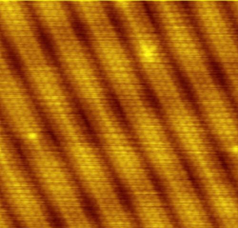
Some of the most spectacular advances in science have been made in modern physics. Many of the laws of classical physics have been modified or rejected, and revolutionary changes in technology, society, and our view of the universe have resulted. Like science fiction, modern physics is filled with fascinating objects beyond our normal experiences, but it has the advantage over science fiction of being very real. Why, then, is the majority of this text devoted to topics of classical physics? There are two main reasons: Classical physics gives an extremely accurate description of the universe under a wide range of everyday circumstances, and knowledge of classical physics is necessary to understand modern physics.
Modern physicsitself consists of the two revolutionary theories, relativity and quantum mechanics. These theories deal with the very fast and the very small, respectively.Relativitymust be used whenever an object is traveling at greater than about 1% of the speed of light or experiences a strong gravitational field such as that near the Sun.Quantum mechanicsmust be used for objects smaller than can be seen with a microscope. The combination of these two theories isrelativistic quantum mechanics,and it describes the behavior of small objects traveling at high speeds or experiencing a strong gravitational field. Relativistic quantum mechanics is the best universally applicable theory we have. Because of its mathematical complexity, it is used only when necessary, and the other theories are used whenever they will produce sufficiently accurate results. We will find, however, that we can do a great deal of modern physics with the algebra and trigonometry used in this text.
Exercise
A friend tells you he has learned about a new law of nature. What can you know about the information even before your friend describes the law? How would the information be different if your friend told you he had learned about a scientific theory rather than a law?
Without knowing the details of the law, you can still infer that the information your friend has learned conforms to the requirements of all laws of nature: it will be a concise description of the universe around us; a statement of the underlying rules that all natural processes follow. If the information had been a theory, you would be able to infer that the information will be a large-scale, broadly applicable generalization.
PHET EXPLORATIONS: EQUATION GRAPHER
Learn about graphing polynomials. The shape of the curve changes as the constants are adjusted. View the curves for the individual terms (e.g. \(y=bx\)) to see how they add to generate the polynomial curve.
📖 OpenStax College Physics, Section 1.1. openstax.org · CC BY 4.0
- Perform unit conversions both in the SI and English units.
- Explain the most common prefixes in the SI units and be able to write them in scientific notation.
The range of objects and phenomena studied in physics is immense. From the incredibly short lifetime of a nucleus to the age of the Earth, from the tiny sizes of sub-nuclear particles to the vast distance to the edges of the known universe, from the force exerted by a jumping flea to the force between Earth and the Sun, there are enough factors of \(10\) to challenge the imagination of even the most experienced scientist. Giving numerical values for physical quantities and equations for physical principles allows us to understand nature much more deeply than does qualitative description alone. To comprehend these vast ranges, we must also have accepted units in which to express them. And we shall find that (even in the potentially mundane discussion of meters, kilograms, and seconds) a profound simplicity of nature appears—all physical quantities can be expressed as combinations of only four fundamental physical quantities: length, mass, time, and electric current.
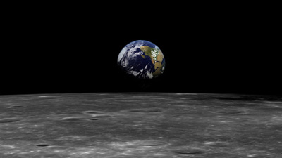
We define aphysical quantityeither byspecifying how it is measuredor bystating how it is calculatedfrom other measurements. For example, we define distance and time by specifying methods for measuring them, whereas we defineaverage speedby stating that it is calculated as distance traveled divided by time of travel.
Measurements of physical quantities are expressed in terms ofunits, which are standardized values. For example, the length of a race, which is a physical quantity, can be expressed in units of meters (for sprinters) or kilometers (for distance runners). Without standardized units, it would be extremely difficult for scientists to express and compare measured values in a meaningful way (Figure .

There are two major systems of units used in the world:SI units(also known as the metric system) andEnglish units(also known as the customary or imperial system).English unitswere historically used in nations once ruled by the British Empire and are still widely used in the United States. Virtually every other country in the world now uses SI units as the standard; the metric system is also the standard system agreed upon by scientists and mathematicians. The acronym “SI” is derived from the FrenchSystème International.
Table gives the fundamental SI units that are used throughout this textbook. This text uses non-SI units in a few applications where they are in very common use, such as the measurement of blood pressure in millimeters of mercury (mm Hg). Whenever non-SI units are discussed, they will be tied to SI units through conversions.
| Length | Mass | Time | Electric Current |
|---|---|---|---|
| meter (m) | kilogram (kg) | second (s) | ampere (A) |
It is an intriguing fact that some physical quantities are more fundamental than others and that the most fundamental physical quantities can be definedonlyin terms of the procedure used to measure them. The units in which they are measured are thus calledfundamental units. In this textbook, the fundamental physical quantities are taken to be length, mass, time, and electric current. (Note that electric current will not be introduced until much later in this text.) All other physical quantities, such as force and electric charge, can be expressed as algebraic combinations of length, mass, time, and current (for example, speed is length divided by time); these units are calledderived units.
The SI unit for time, thesecond(abbreviated s), has a long history. For many years it was defined as 1/86,400 of a mean solar day. More recently, a new standard was adopted to gain greater accuracy and to define the second in terms of a non-varying, or constant, physical phenomenon (because the solar day is getting longer due to very gradual slowing of the Earth’s rotation). Cesium atoms can be made to vibrate in a very steady way, and these vibrations can be readily observed and counted. In 1967, the second was redefined as the time required for 9,192,631,770 of these vibrations (Figure . Accuracy in the fundamental units is essential, because all measurements are ultimately expressed in terms of fundamental units and can be no more accurate than are the fundamental units themselves.
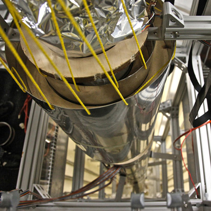
The SI unit for length is themeter(abbreviated m); its definition has also changed over time to become more accurate and precise. The meter was first defined in 1791 as 1/10,000,000 of the distance from the equator to the North Pole. This measurement was improved in 1889 by redefining the meter to be the distance between two engraved lines on a platinum-iridium bar now kept near Paris. By 1960, it had become possible to define the meter even more accurately in terms of the wavelength of light, so it was again redefined as 1,650,763.73 wavelengths of orange light emitted by krypton atoms. In 1983, the meter was given its present definition (partly for greater accuracy) as the distance light travels in a vacuum in 1/299,792,458 of a second (Figure . This change defines the speed of light to be exactly 299,792,458 meters per second. The length of the meter will change if the speed of light is someday measured with greater accuracy.
The SI unit for mass is thekilogram(abbreviated kg); it is defined to be the mass of a platinum-iridium cylinder kept with the old meter standard at the International Bureau of Weights and Measures near Paris. Exact replicas of the standard kilogram are also kept at the United States’ National Institute of Standards and Technology, or NIST, located in Gaithersburg, Maryland outside of Washington D.C., and at other locations around the world. The determination of all other masses can be ultimately traced to a comparison with the standard mass.
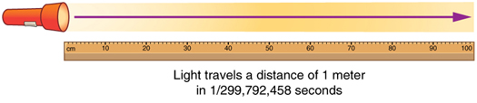
Electric current and its accompanying unit, the ampere, will be introduced in Introduction to Electric Current, Resistance, and Ohm's Law when electricity and magnetism are covered. The initial modules in this textbook are concerned with mechanics, fluids, heat, and waves. In these subjects all pertinent physical quantities can be expressed in terms of the fundamental units of length, mass, and time.
SI units are part of themetric system. The metric system is convenient for scientific and engineering calculations because the units are categorized by factors of 10. Table 2 gives metric prefixes and symbols used to denote various factors of 10.
Metric systems have the advantage that conversions of units involve only powers of 10. There are 100 centimeters in a meter, 1000 meters in a kilometer, and so on. In nonmetric systems, such as the system of U.S. customary units, the relationships are not as simple—there are 12 inches in a foot, 5280 feet in a mile, and so on. Another advantage of the metric system is that the same unit can be used over extremely large ranges of values simply by using an appropriate metric prefix. For example, distances in meters are suitable in construction, while distances in kilometers are appropriate for air travel, and the tiny measure of nanometers are convenient in optical design. With the metric system there is no need to invent new units for particular applications.
The term order of magnitude refers to the scale of a value expressed in the metric system. Each power of 1 0 in the metric system represents a different order of magnitude. For example, 101, 102, 103, and so forth are all different orders of magnitude. All quantities that can be expressed as a product of a specific power of 10 are said to be of the same order of magnitude. For example, the number 800 can be written as 8×102, and the number 450 can be written as 4.5×102. Thus, the numbers 800 and 450 are of the same order of magnitude: 102. Order of magnitude can be thought of as a ballpark estimate for the scale of a value. The diameter of an atom is on the order of 10-9m, while the diameter of the Sun is on the order of 109m.
THE QUEST FOR MICROSCOPIC STANDARDS FOR BASIC UNITS
The fundamental units described in this chapter are those that produce the greatest accuracy and precision in measurement. There is a sense among physicists that, because there is an underlying microscopic substructure to matter, it would be most satisfying to base our standards of measurement on microscopic objects and fundamental physical phenomena such as the speed of light. A microscopic standard has been accomplished for the standard of time, which is based on the oscillations of the cesium atom.
The standard for length was once based on the wavelength of light (a small-scale length) emitted by a certain type of atom, but it has been supplanted by the more precise measurement of the speed of light. If it becomes possible to measure the mass of atoms or a particular arrangement of atoms such as a silicon sphere to greater precision than the kilogram standard, it may become possible to base mass measurements on the small scale. There are also possibilities that electrical phenomena on the small scale may someday allow us to base a unit of charge on the charge of electrons and protons, but at present current and charge are related to large-scale currents and forces between wires.
| Prefix | Symbol | Value | Examples (some are Approximate) | |
|---|---|---|---|---|
| exa | E | \(10^18\) | exameter Em \(10^{18}m\) | distance light travels in a century |
| peta | P | \(10^15\) | petasecond Ps \(10^{15} s\) | 30 million years |
| tera | T | \(10^12\) | terawatt TW \(10^{12} W\) | powerful laser output |
| giga | G | \(10^9\) | gigahertz GHz \(10^9 Hz\) | a microwave frequency |
| mega | M | \(10^6\) | megacurie MCi \(10^{6 }Ci\) | high radioactivity |
| kilo | k | \(10^3\) | kilometer km \(10^3 m\) | about 6/10 mile |
| hecto | h | \(10^2\) | hectoliter hL \(10^2 L\) | 26 gallons |
| deka | da | \(10^1\) | dekagram dag \(10^g\) | teaspoon of butter |
| — | — | \(10^0 (=1)\) | ||
| deci | d | \(10^{−1}\) | deciliter dL \(10^{−1} L\) | less than half a soda |
| centi | c | \(10^{−2}\) | centimeter cm \(10^{−2} m\) | fingertip thickness |
| milli | m | \(10^{−3}\) | millimeter mm \(10^{−3} m\) | flea at its shoulders |
| micro | µ | \(10^{−6}\) | micrometer µm \(10^{−6} m\) | detail in microscope |
| nano | n | \(10^{−9}\) | nanogram ng \(10^{−9} g\) | small speck of dust |
| pico | p | \(10^{−12}\) | picofarad pF \(10^{−12} F\) | small capacitor in radio |
| femto | f | \(10^{−15}\) | femtometer fm \(10^{−15} m\) | size of a proton |
| atto | a | \(10^{−18}\) | attosecond as \(10^{−18} s\) | time light crosses an atom |
The vastness of the universe and the breadth over which physics applies are illustrated by the wide range of examples of known lengths, masses, and times in Table . Examination of this table will give you some feeling for the range of possible topics and numerical values (Figures and .
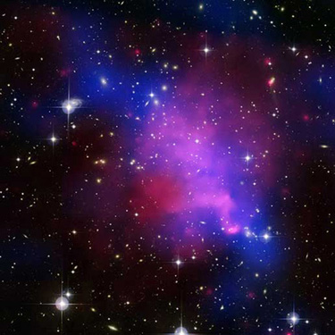
It is often necessary to convert from one type of unit to another. For example, if you are reading a European cookbook, some quantities may be expressed in units of liters and you need to convert them to cups. Or, perhaps you are reading walking directions from one location to another and you are interested in how many miles you will be walking. In this case, you will need to convert units of feet to miles. Let us consider a simple example of how to convert units.
Let us say that we want to convert 80 meters (\(m\)) to kilometers (\(km\)).
ClickAppendix Cfor a more complete list of conversion factors.
| lengths in meters | Masses in kilograms (more precise values in parentheses) | Times in seconds (more precise values in parentheses) | |||
|---|---|---|---|---|---|
| 10−18 | Present experimental limit to smallest observable detail | 10−30 | Mass of an electron (9.11×10−31kg) | 10−23 | Time for light to cross a proton |
| 10−15 | Diameter of a proton | 10−27 | Mass of a hydrogen atom (1.67×10−27kg) | 10−22 | Mean life of an extremely unstable nucleus |
| 10−14 | Diameter of a uranium nucleus | 10−15 | Mass of a bacterium | 10−15 | Time for one oscillation of visible light |
| 10−10 | Diameter of a hydrogen atom | 10−5 | Mass of a mosquito | 10−13 | Time for one vibration of an atom in a solid |
| 10−8 | Thickness of membranes in cells of living organisms | 10−2 | Mass of a hummingbird | 10−8 | Time for one oscillation of an FM radio wave |
| 10−6 | Wavelength of visible light | 1 | Mass of a liter of water (about a quart) | 10−3 | Duration of a nerve impulse |
| 10−3 | Size of a grain of sand | 102 | Mass of a person | 1 | Time for one heartbeat |
| 1 | Height of a 4-year-old child | 103 | Mass of a car | 105 | One day (8.64×104s) |
| 102 | Length of a football field | 108 | Mass of a large ship | 107 | One year (y) (3.16×107s) |
| 104 | Greatest ocean depth | 1012 | Mass of a large iceberg | 109 | About half the life expectancy of a human |
| 107 | Diameter of the Earth | 1015 | Mass of the nucleus of a comet | 1011 | Recorded history |
| 1011 | Distance from the Earth to the Sun | 1023 | Mass of the Moon (7.35×1022kg) | 1017 | Age of the Earth |
| 1016 | Distance traveled by light in 1 year (a light year) | 1025 | Mass of the Earth (5.97×1024kg) | 1018 | Age of the universe |
| 1021 | Diameter of the Milky Way galaxy | 1030 | Mass of the Sun (1.99×1030kg) | ||
| 1022 | Distance from the Earth to the nearest large galaxy (Andromeda) | 1042 | Mass of the Milky Way galaxy (current upper limit) | ||
| 1026 | Distance from the Earth to the edges of the known universe | 1053 | Mass of the known universe (current upper limit) |
Suppose that you drive the 10.0 km from your university to home in 20.0 min. Calculate your average speed (a) in kilometers per hour (km/h) and (b) in meters per second (m/s). (Note: Average speed is distance traveled divided by time of travel.)
First we calculate the average speed using the given units. Then we can get the average speed into the desired units by picking the correct conversion factor and multiplying by it. The correct conversion factor is the one that cancels the unwanted unit and leaves the desired unit in its place.
(1) Calculate average speed. Average speed is distance traveled divided by time of travel. (Take this definition as a given for now—average speed and other motion concepts will be covered in a later module.) In equation form,
(2) Substitute the given values for distance and time.
(3) Convert km/min to km/h: multiply by the conversion factor that will cancel minutes and leave hours. That conversion factor is60 min/hr. Thus,
To check your answer, consider the following:
(1) Be sure that you have properly cancelled the units in the unit conversion. If you have written the unit conversion factor upside down, the units will not cancel properly in the equation. If you accidentally get the ratio upside down, then the units will not cancel; rather, they will give you the wrong units as follows:
which are obviously not the desired units of km/h.
(2) Check that the units of the final answer are the desired units. The problem asked us to solve for average speed in units of km/h and we have indeed obtained these units.
(3) Check the significant figures. Because each of the values given in the problem has three significant figures, the answer should also have three significant figures. The answer 30.0 km/hr does indeed have three significant figures, so this is appropriate. Note that the significant figures in the conversion factor are not relevant because an hour is defined to be 60 minutes, so the precision of the conversion factor is perfect.
(4) Next, check whether the answer is reasonable. Let us consider some information from the problem—if you travel 10 km in a third of an hour (20 min), you would travel three times that far in an hour. The answer does seem reasonable.
There are several ways to convert the average speed into meters per second.
(1) Start with the answer to (a) and convert km/h to m/s. Two conversion factors are needed—one to convert hours to seconds, and another to convert kilometers to meters.
(2) Multiplying by these yields
If we had started with 0.500 km/min, we would have needed different conversion factors, but the answer would have been the same: 8.33 m/s.
You may have noted that the answers in the worked example just covered were given to three digits. Why? When do you need to be concerned about the number of digits in something you calculate? Why not write down all the digits your calculator produces? The module Accuracy, Precision, and Significant Figures will help you answer these questions.
While there are numerous types of units that we are all familiar with, there are others that are much more obscure. For example, a firkin is a unit of volume that was once used to measure beer. One firkin equals about 34 liters. To learn more about nonstandard units, use a dictionary or encyclopedia to research different “weights and measures.” Take note of any unusual units, such as a barleycorn, that are not listed in the text. Think about how the unit is defined and state its relationship to SI units.
Exercise
Some hummingbirds beat their wings more than 50 times per second. A scientist is measuring the time it takes for a hummingbird to beat its wings once. Which fundamental unit should the scientist use to describe the measurement? Which factor of 10 is the scientist likely to use to describe the motion precisely? Identify the metric prefix that corresponds to this factor of 10.
The scientist will measure the time between each movement using the fundamental unit of seconds. Because the wings beat so fast, the scientist will probably need to measure in milliseconds, or 10−3seconds. (50 beats per second corresponds to 20 milliseconds per beat.)
Exercise
One cubic centimeter is equal to one milliliter. What does this tell you about the different units in the SI metric system?
The fundamental unit of length (meter) is probably used to create the derived unit of volume (liter). The measure of a milliliter is dependent on the measure of a centimeter.
📖 OpenStax College Physics, Section 1.2. openstax.org · CC BY 4.0
- Determine the appropriate number of significant figures in both addition and subtraction, as well as multiplication and division calculations.
- Calculate the percent uncertainty of a measurement.
Science is based on observation and experiment—that is, on measurements.Accuracyis how close a measurement is to the correct value for that measurement. For example, let us say that you are measuring the length of standard computer paper. The packaging in which you purchased the paper states that it is 11.0 inches long. You measure the length of the paper three times and obtain the following measurements: 11.1 in., 11.2 in., and 10.9 in. These measurements are quite accurate because they are very close to the correct value of 11.0 inches. In contrast, if you had obtained a measurement of 12 inches, your measurement would not be very accurate.
Theprecisionof a measurement system refers to how close the agreement is between repeated measurements (which are repeated under the same conditions). Consider the example of the paper measurements. The precision of the measurements refers to the spread of the measured values. One way to analyze the precision of the measurements would be to determine the range, or difference, between the lowest and the highest measured values. In that case, the lowest value was 10.9 in. and the highest value was 11.2 in. Thus, the measured values deviated from each other by at most 0.3 in. These measurements were relatively precise because they did not vary too much in value. However, if the measured values had been 10.9, 11.1, and 11.9, then the measurements would not be very precise because there would be significant variation from one measurement to another.
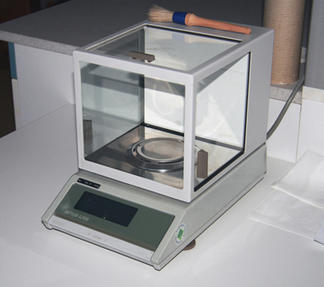
The measurements in the paper example are both accurate and precise, but in some cases, measurements are accurate but not precise, or they are precise but not accurate. Let us consider an example of a GPS system that is attempting to locate the position of a restaurant in a city. Think of the restaurant location as existing at the center of a bull’s-eye target, and think of each GPS attempt to locate the restaurant as a black dot. In Figure , you can see that the GPS measurements are spread out far apart from each other, but they are all relatively close to the actual location of the restaurant at the center of the target. This indicates a low precision, high accuracy measuring system. However, in Figure 4, the GPS measurements are concentrated quite closely to one another, but they are far away from the target location. This indicates a high precision, low accuracy measuring system.
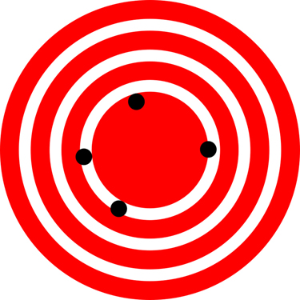
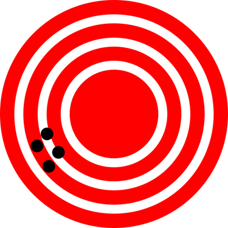
The degree of accuracy and precision of a measuring system are related to the uncertainty in the measurements. Uncertainty is a quantitative measure of how much your measured values deviate from a standard or expected value. If your measurements are not very accurate or precise, then the uncertainty of your values will be very high. In more general terms, uncertainty can be thought of as a disclaimer for your measured values. For example, if someone asked you to provide the mileage on your car, you might say that it is 45,000 miles, plus or minus 500 miles. The plus or minus amount is the uncertainty in your value. That is, you are indicating that the actual mileage of your car might be as low as 44,500 miles or as high as 45,500 miles, or anywhere in between. All measurements contain some amount of uncertainty. In our example of measuring the length of the paper, we might say that the length of the paper is 11 in., plus or minus 0.2 in. The uncertainty in a measurement, A, is often denoted as δA (“delta A”), so the measurement result would be recorded as A ± δA. In our paper example, the length of the paper could be expressed as 11 in.± 0.2.
The factors contributing to uncertainty in a measurement include:
In our example, such factors contributing to the uncertainty could be the following: the smallest division on the ruler is 0.1 in., the person using the ruler has bad eyesight, or one side of the paper is slightly longer than the other. At any rate, the uncertainty in a measurement must be based on a careful consideration of all the factors that might contribute and their possible effects.
MAKING CONNECTIONS: REAL-WORLD CONNECTIONS – FEVERS OR CHILLS?
Uncertainty is a critical piece of information, both in physics and in many other real-world applications. Imagine you are caring for a sick child. You suspect the child has a fever, so you check his or her temperature with a thermometer. What if the uncertainty of the thermometer were 3.0ºC? If the child’s temperature reading was 37.0ºC (which is normal body temperature), the “true” temperature could be anywhere from a hypothermic 34.0ºC to a dangerously high 40.0ºC. A thermometer with an uncertainty of 3.0ºC would be useless.
#### Percent Uncertainty
One method of expressing uncertainty is as a percent of the measured value. If a measurement A is expressed with uncertainty, \(δA\), the percent uncertainty (%uncertainty) is defined to be
A grocery store sells 5-lb bags of apples. You purchase four bags over the course of a month and weigh the apples each time. You obtain the following measurements:
Week 1 weight:4.8 lbWeek 2 weight:5.3 lbWeek 3 weight:4.9 lbWeek 4 weight:5.4 lb
You determine that the weight of the5-lbbag has an uncertainty of±0.4lb.What is the percent uncertainty of the bag’s weight?
First, observe that the expected value of the bag’s weight, \(A\), is 5 lb. The uncertainty in this value, \(δA\), is 0.4 lb. We can use the following equation to determine the percent uncertainty of the weight:
Plug the known values into the equation:
We can conclude that the weight of the apple bag is \(5lb±8%\). Consider how this percent uncertainty would change if the bag of apples were half as heavy, but the uncertainty in the weight remained the same. Hint for future calculations: when calculating percent uncertainty, always remember that you must multiply the fraction by 100%. If you do not do this, you will have a decimal quantity, not a percent value.
#### Uncertainties in Calculations
There is an uncertainty in anything calculated from measured quantities. For example, the area of a floor calculated from measurements of its length and width has an uncertainty because the length and width have uncertainties. How big is the uncertainty in something you calculate by multiplication or division? If the measurements going into the calculation have small uncertainties (a few percent or less), then themethod of adding percentscan be used for multiplication or division. This method says thatthe percent uncertainty in a quantity calculated by multiplication or division is the sum of the percent uncertainties in the items used to make the calculation. For example, if a floor has a length of 4.00m and a width of 3.00m, with uncertainties of 2% and 1%, respectively, then the area of the floor is 12.0m2 and has an uncertainty of 3%. (Expressed as an area this is 0.36m2, which we round to \(0.4\,m^2\) since the area of the floor is given to a tenth of a square meter.)
Exercise
A high school track coach has just purchased a new stopwatch. The stopwatch manual states that the stopwatch has an uncertainty of ±0.05s. Runners on the track coach’s team regularly clock 100-m sprints of 11.49 s to 15.01 s. At the school’s last track meet, the first-place sprinter came in at 12.04 s and the second-place sprinter came in at 12.07 s. Will the coach’s new stopwatch be helpful in timing the sprint team? Why or why not?
No, the uncertainty in the stopwatch is too great to effectively differentiate between the sprint times.
An important factor in the accuracy and precision of measurements involves the precision of the measuring tool. In general, a precise measuring tool is one that can measure values in very small increments. For example, a standard ruler can measure length to the nearest millimeter, while a caliper can measure length to the nearest 0.01 millimeter. The caliper is a more precise measuring tool because it can measure extremely small differences in length. The more precise the measuring tool, the more precise and accurate the measurements can be.
When we express measured values, we can only list as many digits as we initially measured with our measuring tool. For example, if you use a standard ruler to measure the length of a stick, you may measure it to be 36.7cm. You could not express this value as 36.71cm because your measuring tool was not precise enough to measure a hundredth of a centimeter. It should be noted that the last digit in a measured value has been estimated in some way by the person performing the measurement. For example, the person measuring the length of a stick with a ruler notices that the stick length seems to be somewhere in between 36.6cm and 36.7cm, and he or she must estimate the value of the last digit. Using the method of significant figures, the rule is thatthe last digit written down in a measurementis the first digit with some uncertainty. In order to determine the number of significant digits in a value, start with the first measured value at the left and count the number of digits through the last digit written on the right. For example, the measured value 36.7cm has three digits, or significant figures. Significant figures indicate the precision of a measuring tool that was used to measure a value.
Special consideration is given to zeros when counting significant figures. The zeros in 0.053 are not significant, because they are only placekeepers that locate the decimal point. There are two significant figures in 0.053. The zeros in 10.053 are not placekeepers but are significant—this number has five significant figures. The zeros in 1300 may or may not be significant depending on the style of writing numbers. They could mean the number is known to the last digit, or they could be placekeepers. So 1300 could have two, three, or four significant figures. (To avoid this ambiguity, write 1300 in scientific notation.)Zeros are significant except when they serve only as placekeepers.
Exercise
Determine the number of significant figures in the following measurements:
When combining measurements with different degrees of accuracy and precision,the number of significant digits in the final answer can be no greater than the number of significant digits in the least precise measured value. There are two different rules, one for multiplication and division and the other for addition and subtraction, as discussed below.
1. For multiplication and division:The result should have the same number of significant figures as the quantity having the least significant figures entering into the calculation.For example, the area of a circle can be calculated from its radius using A=πr2. Let us see how many significant figures the area has if the radius has only two—say, r=1.2m. Then,
is what you would get using a calculator that has an eight-digit output. But because the radius has only two significant figures, it limits the calculated quantity to two significant figures or
even though it is good to at least eight digits.
2. For addition and subtraction:The answer can contain no more decimal places than the least precise measurement.Suppose that you buy 7.56-kg of potatoes in a grocery store as measured with a scale with precision 0.01 kg. Then you drop off 6.052-kg of potatoes at your laboratory as measured by a scale with precision 0.001 kg. Finally, you go home and add 13.7 kg of potatoes as measured by a bathroom scale with precision 0.1 kg. How many kilograms of potatoes do you now have, and how many significant figures are appropriate in the answer? The mass is found by simple addition and subtraction:
Next, we identify the least precise measurement: 13.7 kg. This measurement is expressed to the 0.1 decimal place, so our final answer must also be expressed to the 0.1 decimal place. Thus, the answer is rounded to the tenths place, giving us 15.2 kg.
In this text, most numbers are assumed to have three significant figures. Furthermore, consistent numbers of significant figures are used in all worked examples. You will note that an answer given to three digits is based on input good to at least three digits, for example. If the input has fewer significant figures, the answer will also have fewer significant figures. Care is also taken that the number of significant figures is reasonable for the situation posed. In some topics, particularly in optics, more accurate numbers are needed and more than three significant figures will be used. Finally, if a number isexact, such as the two in the formula for the circumference of a circle, \(=2πr,\) it does not affect the number of significant figures in a calculation.
Exercise
Perform the following calculations and express your answer using the correct number of significant digits.
(a) 37.2 pounds; Because the number of bags is an exact value, it is not considered in the significant figures.
(b) 1.4 N; Because the value 55 kg has only two significant figures, the final value must also contain two significant figures.
PHET EXPLORATIONS: ESTIMATION
Explore size estimation in one, two, and three dimensions! Multiple levels of difficulty allow for progressive skill improvement.

Paul Peter Urone (Professor Emeritus at California State University, Sacramento) and Roger Hinrichs (State University of New York, College at Oswego) with Contributing Authors: Kim Dirks (University of Auckland) and Manjula Sharma (University of Sydney). This work is licensed by OpenStax University Physics under aCreative Commons Attribution License (by 4.0).
📖 OpenStax College Physics, Section 1.3. openstax.org · CC BY 4.0
- Make reasonable approximations based on given data.
On many occasions, physicists, other scientists, and engineers need to makeapproximationsor “guesstimates” for a particular quantity. What is the distance to a certain destination? What is the approximate density of a given item? About how large a current will there be in a circuit? Many approximate numbers are based on formulae in which the input quantities are known only to a limited accuracy. As you develop problem-solving skills (that can be applied to a variety of fields through a study of physics), you will also develop skills at approximating. You will develop these skills through thinking more quantitatively, and by being willing to take risks. As with any endeavor, experience helps, as well as familiarity with units. These approximations allow us to rule out certain scenarios or unrealistic numbers. Approximations also allow us to challenge others and guide us in our approaches to our scientific world. Let us do two examples to illustrate this concept.
Can you approximate the height of one of the buildings on your campus, or in your neighborhood? Let us make an approximation based upon the height of a person. In this example, we will calculate the height of a 39-story building.
Think about the average height of an adult male. We can approximate the height of the building by scaling up from the height of a person.
Based on information in the example, we know there are 39 stories in the building. If we use the fact that the height of one story is approximately equal to about the length of two adult humans (each human is about 2-m tall), then we can estimate the total height of the building to be
You can use known quantities to determine an approximate measurement of unknown quantities. If your hand measures 10 cm across, how many hand lengths equal the width of your desk? What other measurements can you approximate besides length?
The U.S. federal debt in the 2008 fiscal year was a little less than $10 trillion. Most of us do not have any concept of how much even one trillion actually is. Suppose that you were given a trillion dollars in $100 bills. If you made 100-bill stacks and used them to evenly cover a football field (between the end zones), make an approximation of how high the money pile would become. (We will use feet/inches rather than meters here because football fields are measured in yards.) One of your friends says 3 in., while another says 10 ft. What do you think?
When you imagine the situation, you probably envision thousands of small stacks of 100 wrapped $100 bills, such as you might see in movies or at a bank. Since this is an easy-to-approximate quantity, let us start there. We can find the volume of a stack of 100 bills, find out how many stacks make up one trillion dollars, and then set this volume equal to the area of the football field multiplied by the unknown height.
(1) Calculate the volume of a stack of 100 bills. The dimensions of a single bill are approximately 3 in. by 6 in. A stack of 100 of these is about 0.5 in. thick. So the total volume of a stack of 100 bills is:
(2) Calculate the number of stacks. Note that a trillion dollars is equal to \(\$1×10^{12}\), and a stack of one-hundred $100 bills is equal to $10,000, or \(\$1×10^4\). The number of stacks you will have is:
(3) Calculate the area of a football field in square inches. The area of a football field is \(100\, yd×50\, yd\), which gives \(5,000 \,yd^2\). Because we are working in inches, we need to convert square yards to square inches:
This conversion gives us \(\displaystyle 6×10^6\,in^2\) for the area of the field. (Note that we are using only one significant figure in these calculations.)
(4) Calculate the total volume of the bills. The volume of all the $100 -bill stacks is
(5) Calculate the height. To determine the height of the bills, use the equation:
The height of the money will be about 100 in. high. Converting this value to feet gives
The final approximate value is much higher than the early estimate of 3 in., but the other early estimate of 10 ft (120 in.) was roughly correct. How did the approximation measure up to your first guess? What can this exercise tell you in terms of rough “guesstimates” versus carefully calculated approximations?
Exercise
Using mental math and your understanding of fundamental units, approximate the area of a regulation basketball court. Describe the process you used to arrive at your final approximation
An average male is about two meters tall. It would take approximately 15 men laid out end to end to cover the length, and about 7 to cover the width. That gives an approximate area of \(\displaystyle 420 m^2\).
📖 OpenStax College Physics, Section 1.4. openstax.org · CC BY 4.0
| Section | Title |
|---|---|
| 1.1 | 1.1: Physics- An Introduction |
| 1.2 | 1.2: Physical Quantities and Units |
| 1.3 | 1.3: Accuracy, Precision, and Significant Figures |
| 1.4 | 1.4: Approximation |